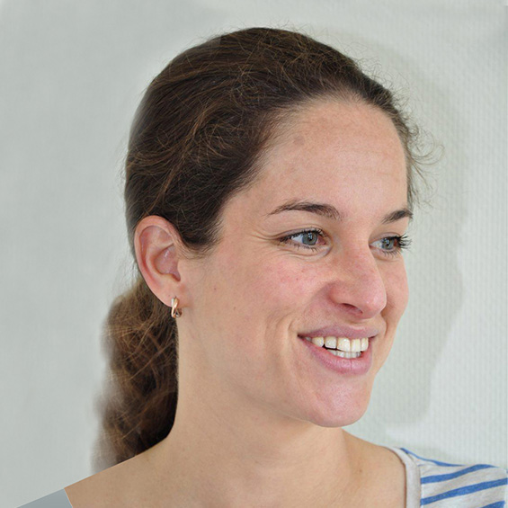

Medewerkers
P.A. Soeter | huisarts
(ma, di, wo, vrij)
R.P. Soeter | huisarts
(ma, di, do, vrij)

Merel Nabuurs
De praktijkverpleegkundige is gespecialiseerd in begeleiding en behandeling van:
-patiënten die lijden aan suikerziekte (diabetes mellitus)
-patiënten die lijden aan chronische longaandoeningen (astma en COPD)
-patiënten met een verhoogd risico op hart- en vaatziekten (CVRM)
Verder ondersteunt de praktijkverpleegkundige de huisarts met het afnemen van:
-longfunctieonderzoek (spirometrie)
-gehoortesten (audiometrie)
-onderzoek van de bloedvaten (enkel-arm index)
-dementie screening
-uitstrijkjes voor het bevolkingsonderzoek naar baarmoederhalskanker
De praktijkverpleegkundige is opgeleid en bevoegd om zelf ziekten te diagnosticeren en te behandelen. Ook mag zij bepaalde medicatie voorschrijven. Het spreekuur van de praktijkverpleegkundige wordt altijd nabesproken met een van de huisartsen.
Onderzoek en behandeling door de praktijkverpleegkundige wordt vergoed door uw zorgverzekeraar en valt buiten het eigen risico.
De praktijkondersteuner geestelijke gezondheidzorg (POH-GGZ) is gespecialiseerd in begeleiding en behandeling van patiënten met milde psychische klachten. Meestal zal een aantal gesprekken met de POH-GGZ voldoende zijn om de klachten de baas te kunnen. Soms blijkt verwijzing naar een andere zorgverlener toch noodzakelijk. De POH-GGZ zal u dan in overleg met een van de huisartsen doorverwijzen.
De huisarts beoordeelt altijd of uw klachten geschikt zijn voor behandeling bij de POH-GGZ of dat u moet worden doorverwezen naar bijvoorbeeld een psycholoog of psychiater. Het spreekuur van de POH-GGZ wordt altijd nabesproken met een van de huisartsen.
Behandeling en begeleiding door de POH-GGZ wordt vergoed door uw zorgverzekeraar en valt buiten het eigen risico.